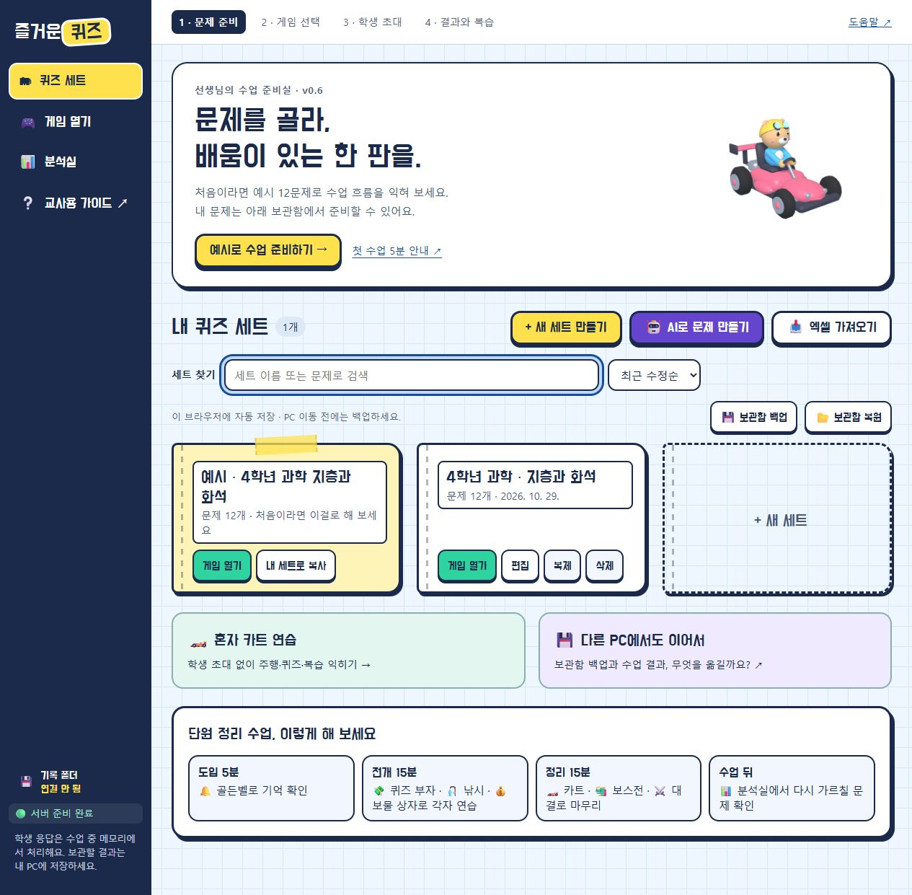
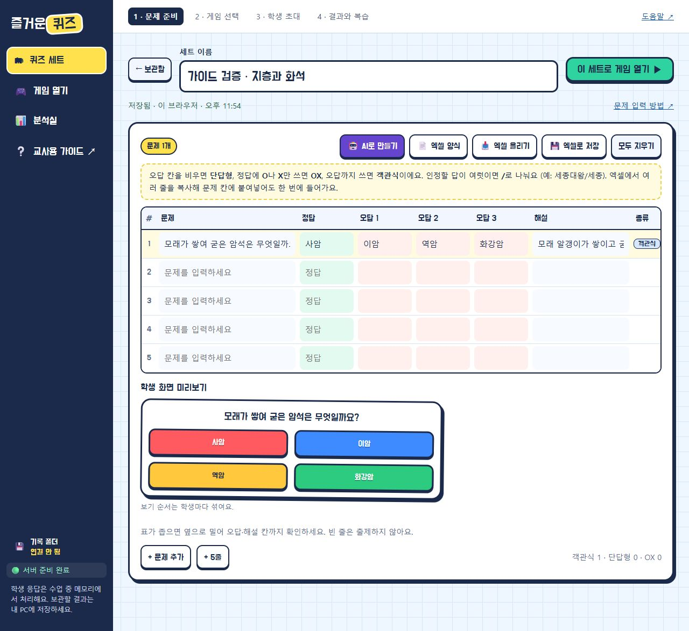
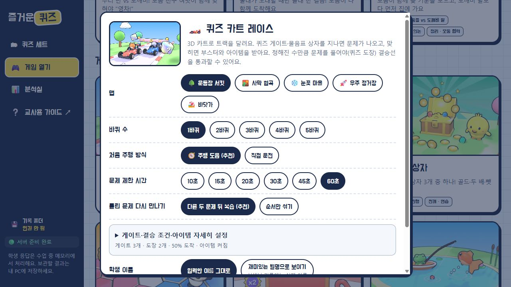
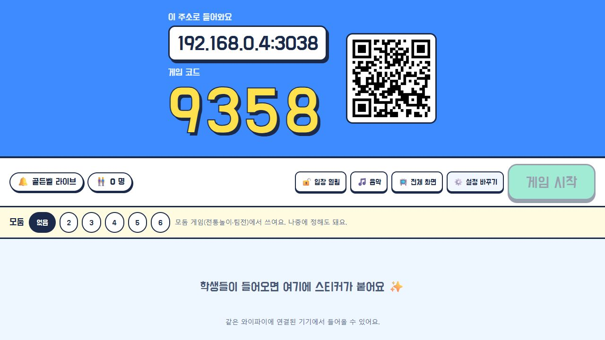
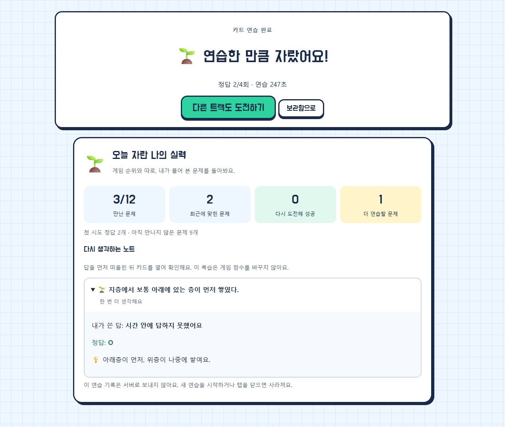

엑셀로 한 번에
엑셀 양식을 내려받아 채운 뒤 엑셀 올리기로 넣습니다. 엑셀의 여러 행을 복사해 문제 칸에 붙여넣을 수도 있습니다. 가져온 뒤 문항 수와 미리보기를 확인하세요.
TEACHER PLAYBOOK · v0.6
문제 준비 → 학생 초대 → 게임 → 복습.
처음 사용하는 선생님도 순서대로 따라갈 수 있는 수업 안내서입니다.
2026년 10월 30일판 · 화면 사진은 예시 문제와 가상 참여자를 사용했습니다.
이 안내서는 인터넷 없이 읽을 수 있습니다. 게임을 열 때는 먼저 시작하기.cmd를 실행하세요.
배포 ZIP을 압축 해제하고 시작하기.cmd를 더블클릭합니다. 준비가 끝나면 선생님 화면이 열립니다. 수업 중에는 실행 창을 열어 두세요.
왼쪽 아래에 서버 준비 완료가 표시되는지 봅니다. 로컬 실행 기본 주소는 http://localhost:3030/teacher.html입니다.
상단의 노란 버튼을 누르면 지층과 화석 12문제가 선택됩니다. 처음에는 골든벨 라이브를 골라 함께 한 문제씩 진행해 보세요.
방을 연 뒤 대기실의 QR이나 주소로 접속합니다. 문제 한 개와 결과 저장까지 확인한 다음 수업을 시작하면 좋습니다.

새 세트 만들기를 누르고 세트 이름을 적습니다. 표의 문제·정답은 필수입니다. 해설을 넣으면 오답 뒤와 복습 노트에서 함께 볼 수 있습니다.
| 문제 모양 | 입력 방법 | 예시 |
|---|---|---|
| 객관식 | 정답과 오답을 입력 | 정답: 사암 / 오답: 이암, 역암, 화강암 |
| OX | 오답은 비우고 정답에 O 또는 X | 지층의 아래층이 보통 먼저 쌓였다. → O |
| 단답형 | 오답을 비우고 정답만 입력 | 퇴적물이 굳어 만들어진 암석은? → 퇴적암 |
| 여러 인정 답 | 정답을 /로 구분 | 세종대왕/세종 |
태블릿에서는 단답형을 선택형 보기로 바꾸는 경우가 있습니다. 교사가 설계한 오답을 사용하려면 객관식으로 준비하세요. 한 세트는 최대 300문항입니다.

엑셀 양식을 내려받아 채운 뒤 엑셀 올리기로 넣습니다. 엑셀의 여러 행을 복사해 문제 칸에 붙여넣을 수도 있습니다. 가져온 뒤 문항 수와 미리보기를 확인하세요.
AI로 만들기에서 조건을 고르고 요청문을 복사합니다. 사용하는 AI에 자료와 함께 붙여넣고, 받은 파일을 가져옵니다. 앱이 AI에 자동으로 자료를 보내지는 않습니다. 정답·오답·표현은 교사가 검토하세요.
다음은 수업 구성 예시입니다. 점수나 순위가 학습 수준을 그대로 뜻하지는 않습니다. 처음에는 한 게임으로 운영을 익힌 뒤 종류를 늘려 보세요.
| 수업 의도 | 게임 | 운영할 때 볼 점 |
|---|---|---|
| 함께 핵심 확인 | 골든벨 라이브 | 같은 문제의 답 분포를 보고 바로 설명하기 |
| 각자 반복 연습 | 보물 상자 · 퀴즈 부자 · 낚시 대회 | 선택·보상에만 몰입하지 않는지, 오답 해설을 읽는지 보기 |
| 속도감 있게 마무리 | 퀴즈 카트 레이스 | 처음에는 주행 도움 켜기, 수업 전에 조작 연습하기 |
| 팀 전략과 협력 | 땅따먹기 팀전 · 다 함께 보스전 | 모둠 안에서 여러 학생이 참여하도록 역할 나누기 |
| 짧은 대결 | 뿅망치 대결 | 승패보다 문항 풀이와 설명에 초점 두기 |
| 전통놀이로 함께 도전 | 다 함께 줄다리기 · 무궁화 꽃이 피었습니다 · 모둠 윷판 원정 | 모둠의 참여와 의논을 살피고 역할 바꾸기 |

설정 후 방 열기를 누르면 학생 주소·4자리 게임 코드·QR이 나타납니다. TV에서는 전체 화면을 사용할 수 있습니다.
학생은 QR 또는 주소로 들어와 코드, 이름, 기기 종류를 입력하고 스티커 친구를 고릅니다. 설치나 회원 가입은 필요하지 않습니다.
입장 인원과 이름을 확인합니다. 모둠을 사용할 때는 수를 정하고 배치를 확인하세요. 모두 들어오면 입장을 잠글 수 있습니다.
학생 한 명 이상이 입장하면 시작할 수 있습니다. 조작법과 종료 뒤 복습할 시간을 안내하고 게임 시작을 누릅니다.

오답이 이어지거나 한동안 응답이 없는 학생, 참여가 치우친 모둠을 살펴볼 단서입니다. 기기 문제·읽기 시간·역할 차이도 있으니 실제 상황을 확인하고 대화를 나누세요.
각자 진행하는 게임에서는 오답 해설을 읽은 뒤 읽었어요 · 계속하기를 누릅니다. 게임 전체 시간은 계속 흐르므로 너무 짧게 설정하지 마세요.
| 조작 | 키보드 / 화면 버튼 |
|---|---|
| 핸들·가속 | ← → / ↑ 또는 화면 핸들과 자동 가속 |
| 아이템 | Space 또는 아이템 칸 누르기 |
| 길을 잃었을 때 | 바로 세우기: 현재 진행 위치에서 방향을 바로잡기 |
| 쉽게 달리기 | 주행 도움: 핸들을 놓으면 길을 따라 달리기 |
수업을 마치려면 교사 화면에서 게임 끝내기 → 끝내고 결과 보기를 누릅니다. 실수로 눌렀다면 계속 게임하기 또는 Esc로 돌아갑니다.
종료 후 저장을 시도합니다. 연결한 기록 폴더 또는 다운로드 위치에서 JSON과 엑셀 파일을 확인하세요. 저장 실패·권한 요청이 보이면 결과 화면의 저장 버튼을 다시 누릅니다.
분석실에서 보기로 문항별 정답률, 많이 고른 오답, 응답 시간과 반복 시도 등을 함께 살펴봅니다. 예를 들어 많은 학생이 같은 오답을 골랐다면 정답을 설명하게 한 뒤 오개념인지 확인하세요.
게임이 끝나면 만난 문항 수, 최근에 맞힌 문항, 다시 도전해 성공한 문항을 확인합니다. 틀린 문제 카드를 열기 전에 답과 이유를 먼저 떠올리게 해 보세요.
계속하려면 한 판 더 또는 다른 게임 고르기, 수업을 끝내려면 방 닫기를 누릅니다. 학생이 복습할 시간을 준 뒤 닫으세요.

| 무엇을 | 어디에 있나요? | 다른 PC에서는 |
|---|---|---|
| 게임 프로그램 | 프로젝트 폴더 또는 배포 ZIP | Drive 동기화 완료 후 ZIP을 로컬에 압축 해제 |
| 내 문제 세트 | 현재 브라우저의 현재 접속 주소 | 기존 PC: 보관함 백업 → 새 PC: 보관함 복원 |
| 수업 결과 | 교사가 저장한 JSON·엑셀 파일 | 파일을 옮기고 분석실에서 기록 파일 열기 |
보관함의 보관함 백업을 누릅니다. 예시만 있고 내 세트가 없다면 먼저 내 세트로 복사하세요. JSON 파일이 실제로 내려받아졌는지 확인합니다.
백업과 수업 결과를 원하는 Drive 폴더에 보관합니다. 수업 종료 → 서버 종료 → 동기화 완료 순서로 PC를 옮기세요.
게임을 켜고 보관함 복원을 누릅니다. 기존 세트는 유지하고 같은 세트는 건너뛰며, 내용이 다른 세트는 새 복사본으로 추가합니다.
복원 한도: 파일 5MB, 한 번에 200세트, 세트당 300문항. 기록 폴더 권한은 새 PC에서 다시 연결하세요.
수업 중 이름과 응답은 서버 메모리에서 처리하고 서버 디스크에는 저장하지 않습니다. 결과 저장 뒤 원본 응답 로그·이벤트는 지우며, 학생 복습용 요약은 방을 닫거나 만료될 때까지 메모리에 남습니다. 방을 닫으면 삭제되고, 서버를 종료하면 진행 중인 방도 사라집니다. 학생은 종료 후 본인 복습만 볼 수 있습니다.
장기 보관하는 결과 파일의 이름·응답은 교사가 관리합니다. AI에 자료를 붙여넣기 전 개인정보가 포함되지 않았는지 확인하고 학교에서 허용한 서비스를 사용하세요.
교사 서버 창이 켜져 있는지, 학생 주소가 localhost가 아닌지, 같은 네트워크인지 순서대로 확인하세요. 대기실 주소가 바뀌었다면 새 QR로 다시 접속합니다. 학교의 기기 간 연결 제한은 담당자에게 확인하세요.
시작하기.cmd의 오류 안내를 확인합니다. 인터넷 서버를 사용하는 경우 서버가 깨어나는 데 시간이 걸릴 수 있습니다. 잠시 뒤 다시 시도하고, 수업 직전에 기기 한 대로 방 입장을 확인하세요.
저장 완료 문구와 연결 폴더 또는 다운로드 목록을 확인합니다. 브라우저가 다운로드를 막았거나 폴더 권한이 풀렸다면 결과 화면을 닫기 전에 다시 저장하세요. 분석실에서 파일을 열어 내용까지 확인하면 좋습니다.
프로그램 폴더와 브라우저 보관함은 별개입니다. 기존 PC의 보관함 백업 JSON을 새 PC에서 복원하세요. 브라우저나 포트가 바뀐 경우도 같은 방법을 사용합니다.
편집 화면 위쪽의 확인 안내를 눌러 문제·정답 누락을 수정합니다. 글자 수 제한이나 300문항 한도를 넘었다면 줄이거나 세트를 나눕니다. 오른쪽 미리보기로 입력된 문항을 확인하세요.
주행 도움을 켜고 바로 세우기를 눌러 보세요. 화면 버튼 사용자는 입장할 때 태블릿을 고릅니다. 수업 전에 혼자 카트 연습에서 조작을 익힙니다.
오답 해설 아래의 ‘읽었어요 · 계속하기’를 눌러야 합니다. 작은 화면에서는 해설 카드 안쪽을 내려 버튼을 확인하세요.
같은 기기·브라우저에서 방이 살아 있으면 재접속을 시도합니다. 서버를 종료했거나 방을 닫았다면 새 방에 다시 입장해야 합니다. 같은 학생을 여러 탭에서 열지 마세요.
맞는 항목이 없어요. 다른 단어로 검색하거나 검색어를 지워 전체 항목을 보세요.
체크는 이 탭에서만 표시하며 학생 정보는 입력하지 않습니다.
0 / 5 확인